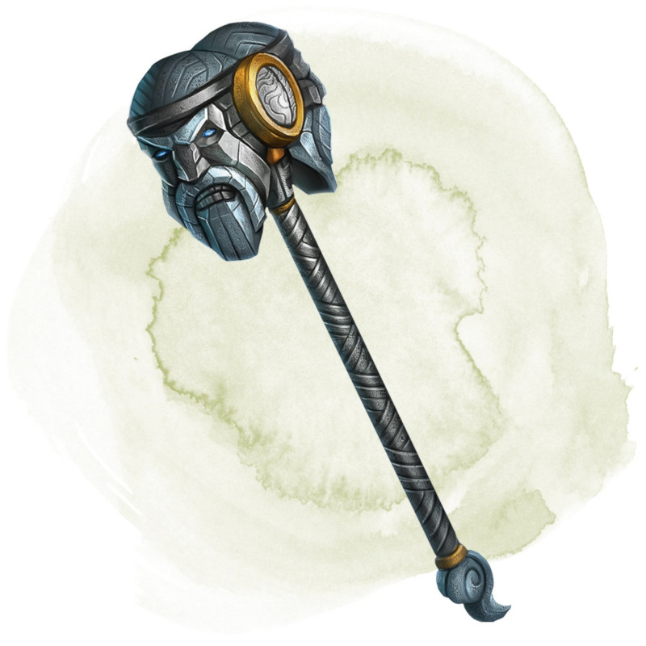

Hammer of Thunderbolts
Weapon (maul), legendary
You gain a +1 bonus to attack and damage rolls made with this magic weapon.
Giant's Bane (requires attunement). You must be wearing a belt of giant strength (any variety) and gauntlets of ogre power to attune to this weapon. The attunement ends if you take off either of those items. While you are attuned to this weapon and holding it, your Strength score increases by 4 and can exceed 20, but not 30. When you roll a 20 on an attack roll made with this weapon against a giant, the giant must succeed on a DC 17 Constitution saving throw or die.
The hammer also has 5 charges. While attuned to it, you can expend 1 charge and make a ranged weapon attack with the hammer, hurling it as if it had the thrown property with a normal range of 20 feet and a long range of 60 feet. If the attack hits, the hammer unleashes a thunderclap audible out to 300 feet. The target and every creature within 30 feet of it must succeed on a DC 17 Constitution saving throw or be stunned until the end of your next turn. The hammer regains 1d4 + 1 expended charges daily at dawn.
Giant's Bane (requires attunement). You must be wearing a belt of giant strength (any variety) and gauntlets of ogre power to attune to this weapon. The attunement ends if you take off either of those items. While you are attuned to this weapon and holding it, your Strength score increases by 4 and can exceed 20, but not 30. When you roll a 20 on an attack roll made with this weapon against a giant, the giant must succeed on a DC 17 Constitution saving throw or die.
The hammer also has 5 charges. While attuned to it, you can expend 1 charge and make a ranged weapon attack with the hammer, hurling it as if it had the thrown property with a normal range of 20 feet and a long range of 60 feet. If the attack hits, the hammer unleashes a thunderclap audible out to 300 feet. The target and every creature within 30 feet of it must succeed on a DC 17 Constitution saving throw or be stunned until the end of your next turn. The hammer regains 1d4 + 1 expended charges daily at dawn.
Dungeon Master´s Guide (SRD)
